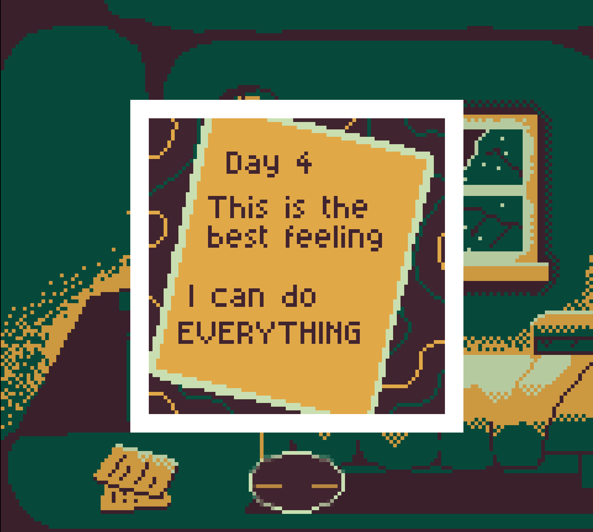
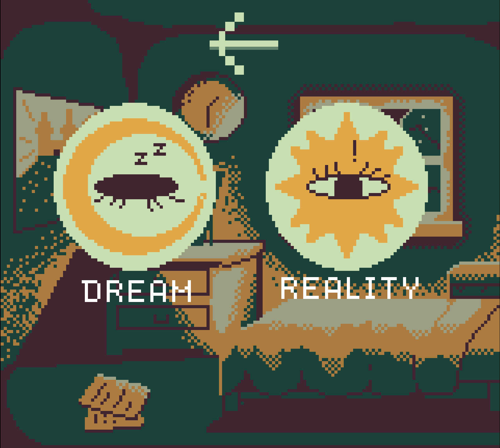
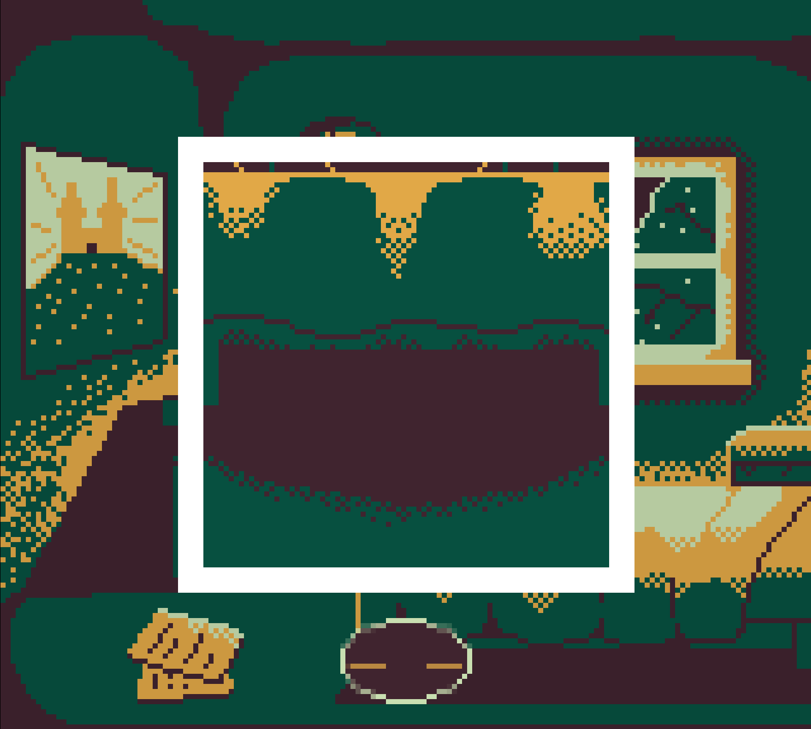

Lucidity was inspired by the game jam theme ‘Strange Places’ and a question: is it possible to make the player doubt their own perception? Built in 4 days for Brackeys Game Jam 2026.1, the goal was to create a short narrative experience where observation itself is the core mechanic, just the player attention and judgment. The constraint of the jam timeline forced sharp scoping decisions. I stripped the design down to one interaction (click to inspect), one question (dream or reality?), and one emotional throughline: doubt.
As Solo Developer, I owned every aspect of Lucidity from concept through release in 4 days:
With only 4 days, I prioritized atmosphere over scope. The pixel art style and the palette was a deliberate choice, it creates just enough ambiguity in the visuals to make the player second-guess what they're seeing, which reinforces the dream/reality theme mechanically.
I wrote a story arc that unfolds across 6 nights, each functioning as its own level. The narrative is delivered through the environment itself and through written letters the player discovers (image 1) never through exposition. Each night reveals a fragment of the larger story, carefully paced so that uncertainty builds alongside understanding. By the midpoint, the player has just enough information to form a theory and just enough doubt to question it.
I designed the environments around subtle cues: the passing of time, objects that shift between inspections, details that feel slightly wrong. The point-and-click format kept the interaction layer minimal, letting the storytelling curve and visual design carry the weight. The result is a progression where early nights feel grounded and observational, while later nights blur the line more aggressively, mirroring the player character's own unraveling.



The single-verb interaction design (click to inspect, then judge) kept scope tight and made the 4-day deadline achievable while still delivering a complete experience arc. Players consistently reported feeling genuinely uncertain about their choices, which was exactly the target emotion.
The 6-night structure gave the narrative a natural rhythm despite the short runtime. Delivering story through environmental details and letters meant every inspection felt purposeful, players were piecing together the story and making their dream/reality judgment simultaneously, which kept both systems reinforcing each other.
Increase the tactile feedback associated with interactions with objects in the room: subtle movements, more satisfying or frightening sound effects.
The story did seem a bit rushed to me, though, and would certainly benefit from a more gradual build-up to the reveal, with the addition of more red herrings and mystery.